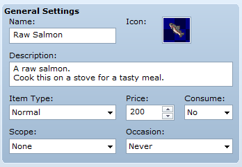
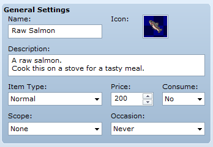
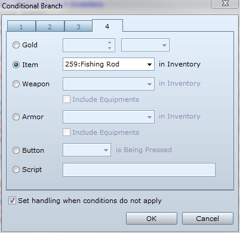
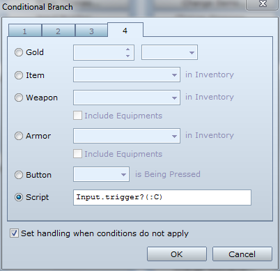
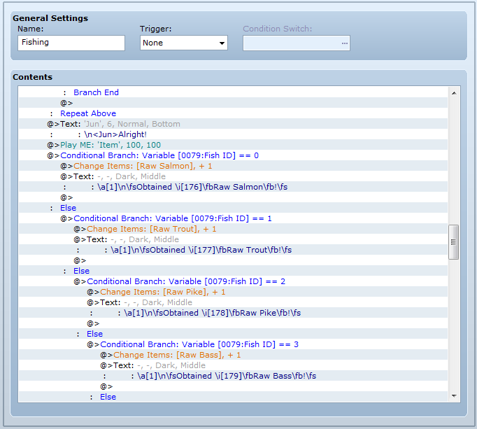
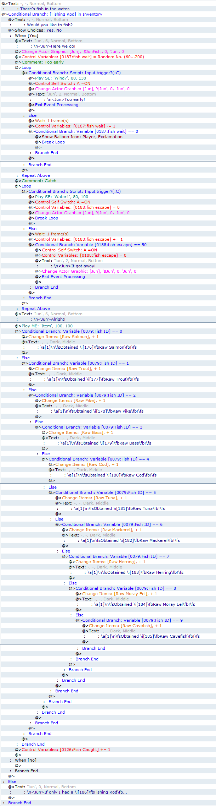

Evented Fishing System
An event that requires pressing the correct key during the required timeframe to succeed.
Engine: RPG Maker VX Ace
Difficulty: Easy
Introduction
This is a tutorial on making an evented fishing system (or any sort of reflex event), as seen in Gate of Providence!
Interact with a fishing spot and press the Z key when the exclamation balloon appears to reel in a fish.
Because this system is evented, it is possible to use this in other RPG Maker versions, with some modifications to script calls.
Parallel Event Bug Fix
Before we get started with the eventing, we must fix a bug that is included with RPG Maker VX Ace. First, open the Script Editor. Find Game_Interpreter and go to line 106. Comment out Fiber.yield and paste Fiber.yield on the line below @fiber = nil. This essentially swaps the two lines and is required for this system to work. Without this fix, button inputs would feel unresponsive.

The Gist
We'll be setting up a common event named "Fishing". Our fishing spots will be events that consist of two pages: one to catch the fish and one to respawn the event. The event will only determine the fish that be caught and call the common event, making it easy to copy and paste the event many times.
Setting up the Database
In the items tab of the Database, create your items for the fishing rod and the fish. Then create a new Common Event.
 

Part 1: Item Check
You may skip this step if the player isn't required to have any items to start fishing.
We need to make sure the player has the necessary items to start fishing. Simply make a Conditional Branch (check "Set handling when conditions do not apply") and check to see the required item is in the inventory. You can add some text, show choices, and change the player's graphic to make it look nice.

Part 2: Reflex
This is the meat of the system.
First, we will be implementing the time period right after the player begins fishing and before the fish bites.
Inside the conditional branch, set a Variable (fish wait) to a random number between 60 to 200. You can adjust the range of the numbers to change the duration.

Now create a loop. Inside the loop, add a conditional branch (check "Set handling when conditions do not apply") that checks for the script call Input.trigger?(:C). This will check for player input, namely the C button (Z Key). This branch handles the events that occur when the player reels in too early.

Inside that conditional branch, set Self-Switch A to ON and Exit Event Processing. Optionally, you can add some sound effects and show some text. Remember this is for when the player is too early.
Now for the second part, the else. Add a Wait command for 1 frame, then subtract 1 from the (fish wait) variable. Add another conditional branch (unchecked) to check when (fish wait) is equal to 0. Inside that branch, show a balloon icon on the player and make sure "Wait for Completion" is ticked off, then break the loop. It should look like this:

Second, we will implement the period after the fish bites.
Outside of that loop and inside the conditional for the item, add another loop. Inside the loop, add a conditional branch (check "Set handling when conditions do not apply") that checks for Input.trigger?(:C) like before. Inside, set Self-Switch A to ON and another Variable (fish escape) to 0, and then break the loop. The player has reeled in the fish in time.
In the else part, add a Wait command for 1 frame, then add 1 to the (fish escape) variable. Add a conditional branch (unchecked) to check when (fish escape) is equal to 50. You can change this to something else for a different time. Inside that conditional, set Self-Switch A to ON and (fish escape) variable to 0, and Exit Event Processing. The player has let the fish get away.
Here's how it looks.

Part 3: Rewards
We will need to determine what the player will catch. Outside the loop, add a conditional branch (checked) to check if a variable (fish ID) is equal to 0. We will be setting this variable in the events later. You can add more conditional branches to check for different types of fish. Inside the branch, give the player the fish with Change Items. If you only have one kind of fish, you can just remove all the conditional branches and just give the fish. Here's what it could look like:

Creating the Event(s)
Create an event with Priority: Same as Players and Trigger: Action Button. In the event page, set variable (fish ID) to a number that corresponds to the rewards in the previous part and then call the fishing common event.

For the second page, check Self-Switch A, set the graphic to (None), Trigger to Parallel Process. In the event page, Wait however long is needed and set Self-Switch A to OFF. This will respawn the fishing spot after waiting a bit.

You can now copy and paste this event as much as you like. Make sure to change the (fish ID) variable if you want different kinds of fish.
Final Result
Here's how the common event looks after it is complete.

Conclusion
I hope this tutorial was helpful. This may not be the most efficient way to make a fishing system but it works well. It is easy to add to this system, for example you could do things like: randomized fish, items that modify bite time, fishing regions, etc.